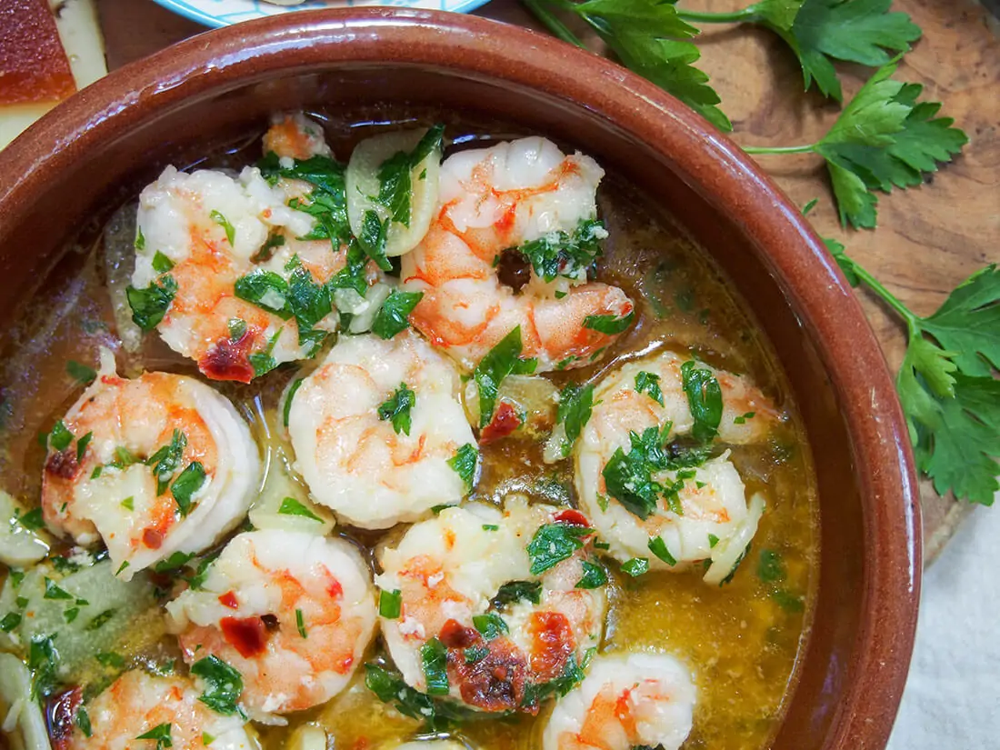

Gambas Al Ajillo
Click to Main Page

Preparation time: 20 mins
Ingredients:
1 pound frozen large shrimp (21-25 count) - thawed, peeled, and deveined
1 teaspoon hot smoked paprika (Optional)
kosher salt to taste
¼ cup extra-virgin olive oil
2 tablespoons dry sherry
1 tablespoon chopped Italian flat-leaf parsley
Instructions:
Place shrimp in a large bowl and season with paprika and kosher salt. Mix well to coat.
Slice garlic into thin slices. Heat oil in a skillet over medium heat; add garlic and cook until golden, about 2 minutes.
Add shrimp and increase heat to high. Toss and turn shrimp with tongs until starting to curl but still undercooked, about 2 minutes.
Pour in sherry. Cook, stirring continuously, until sauce comes up to a boil and shrimp is cooked through, about 1 minute more.
Remove from heat. Stir in parsley.
Main Page